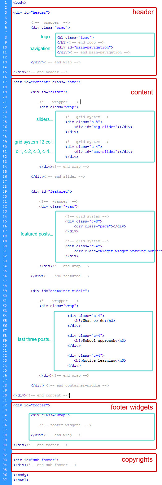
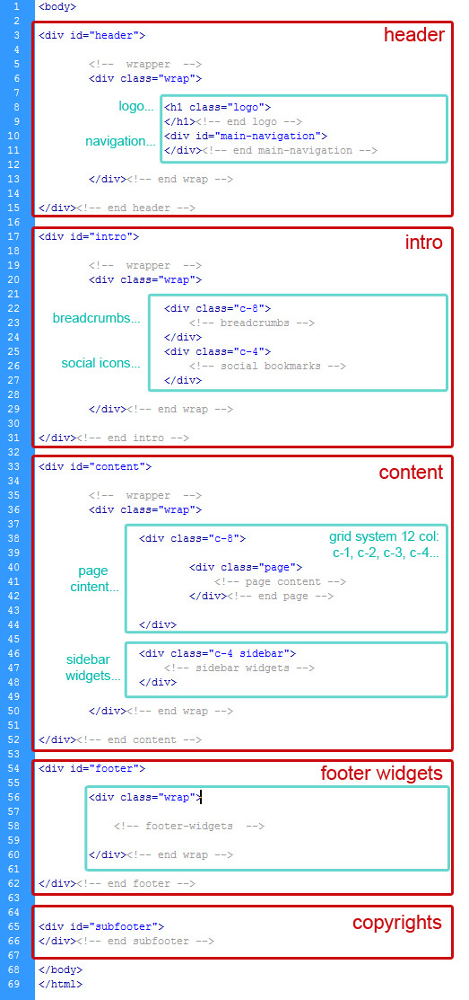

Created: 15.09.2011
By: aislin
Email: dubravka08@gmail.com
Thank you for purchasing my theme. If you have any questions that are beyond the scope of this help file, please feel free to email via my user page contact form here. Thanks so much!
This theme is a fixed layout with one column in home page and gallery page, and two columns in all other pages. All of the information within the main content area is nested within a div with an id of "bd", shortcut for body, and in section class "yui-g", this is YUI reset-fonts-grids structure. The general template structure is the same throughout the template. Here is the general structure for one column page.
The two column page stucture with class "content", and class "sidebar" looks like this.
If you want to change Logo image, just create image with max height: 68px and width as you like, and save as logo.png with transparent bg.
All images, as plaseholders, are kept in folder assets so you can just save your images there with same names and dimensions and thay will automaticly appear on the page.
If you want to insert more images in gallery its very important to include " rel="example_group" " in anchor tag, because if you dont include it will not work.
To change contact information just open mail.php file and change recipient mail, place where mails will be sent.
So, to ensure that your new styles are applied, make sure that they carry enough "weight" and that there isn't a style lower in the CSS file that is being applied after yours.
I'm using two CSS files in this theme.
The first file style.css is a main stylesheet, and contains all of the specific stylings for the page. The file is separated into sections using:
/* ----->>> STRUCTURE <<<------ */
a{
cursor: pointer;
text-decoration: none;
}
Here you define main content width, and fixed layout in the middle:
.wrap { /* helper - get together content */
width: 954px;
margin: 0 auto;
position:relative;
overflow:hidden;
}
#content {
overflow: hidden;
padding: 25px 0 80px;
position: relative;
z-index: 4;
}
Here you can change header image:
body {
background:url("images/header-bckgr.jpg") no-repeat scroll center top transparent;
}
Here you can change width of columns:
.c-1 { width: 52px; }
.c-2 { width: 134px; }
.c-3 { width: 216px; }
.c-4 { width: 298px; }
.c-5 { width: 380px; }
.c-6 { width: 462px; }
.c-7 { width: 544px; }
.c-8 { width: 626px; }
.c-9 { width: 708px; }
.c-10 { width: 790px; }
.c-11 { width: 872px; }
.c-12 { width: 954px; }
The second file styles/color/color.css is a additional skin stylesheet, and contains all stylings for one color. This file depend on color which will be selected. There are 10 colors combinations. If you want to change color of your site you need to change path of css file in header. For example if you want green-blue color combination you need to type:
styles/Yellow-Orange/yellow-orange.css
instead of default skin css:
styles/Green-Blue/green-blue.cssHere you can change background pattern:
html{
background:url("images/white-paper-bg.jpg") repeat scroll 0 0 transparent;
}
Here you can change slider mask pattern:
.slider-mask{
background:url("images/slider-mask1.png") no-repeat scroll 0 0 transparent;
}
Here you can change any color. For example:
.post h2 {
color: #B8CB02;
}
If you would like to edit a specific section of the site, simply find the appropriate label in the CSS file, and then scroll down until you find the appropriate style that needs to be edited.
This theme imports four Javascript files.
//BIG SLIDER AT HOME PAGEIf you want to change the speed of transitions change the value in milisecundes
$j("#big-slider").hover( function () {
$j('ul#slider-items').cycle('pause');
},
function () {
$j('ul#slider-items').cycle('resume');
});
//slider Items
$j('ul#slider-items').cycle({
//fx: 'fade',
fx: 'scrollDown,fade',
easing: 'easeOutBounce',
delay: -4000,
next: '.next',
prev: '.previous',
pager: '#slider-pagination',
pause: 1,
fit: 1,
height: 300,
// callback fn that creates a thumbnail to use as pager anchor
pagerAnchorBuilder: MLS_paginate
});
//Pagination related to main slider at home page
function MLS_paginate(index, obj){
return '<li><a href="#">' + (index+1) + '</a></li>';
}
//CATEGORY SCROLLER AT HOME PAGE
$j("#scroller").cycle({
fx: 'blindY',
speed: 500,
next: '.down-arrow',
prev: '.up-arrow',
pause: 1,
timeout: 0
});
speed: 500
//ZOOM effect FancyBox
$j("a[rel=example_group]").fancybox({
'transitionIn' : 'none',
'transitionOut' : 'none',
'titlePosition' : 'over',
'titleFormat' : function(title, currentArray, currentIndex, currentOpts) {
return 'Image ' + (currentIndex + 1) + ' / ' + currentArray.length + (title.length ? ' ' + title : '') + '';
}
});
For updating the Fancybox effect please refer to the official Fancybox documentation
// INITIALIZE DROPDOWN MENU
$j('.dd-menu li:has(ul) > a').addClass('dd-submenu-title').append('');
$j('.dd-menu li').hover(function(){
// HOVER IN HANDLER
$j('ul:first', this).css({visibility: "visible",display: "none"}).slideDown(250);
var path_set = $j(this).parents('.dd-menu li').find('a:first');
$j(path_set).addClass('dd-path');
$j('.dd-menu li a.dd-path').not(path_set).removeClass('dd-path');
},function(){
// HOVER OUT HANDLER
$j('ul:first', this).css({visibility: "hidden"});
});
$j('.dd-menu').hover(function() {
// HOVER IN HANDLER
}, function() {
// HOVER OUT HANDLER
$j('a.dd-path', this).removeClass('dd-path');
});
I've included 20 psds with this theme and they are all sliced:
If you'd like to change the main image in the header, open "header-bckgr.psd" in folder "slicing", make the necessary adjustments, and then save the file as "header-bckgr.jpg". Do the same for all other elements that are include in folder "slicing" . All other files are sliced as well, for e.g. If you want to change bg-image for post image you just open thumb-post192x185.psd make necessary adjustments, and than save file as "thumb-post192x185.png". You can do the same for all other pages.
I've used the following images, icons or other files as listed.
Once again, thank you so much for purchasing this theme. As I said at the beginning, I'd be glad to help you if you have any questions relating to this theme. No guarantees, but I'll do my best to assist. If you have a more general question relating to the themes on ThemeForest, you might consider visiting the forums and asking your question in the "Item Discussion" section.
Aislin